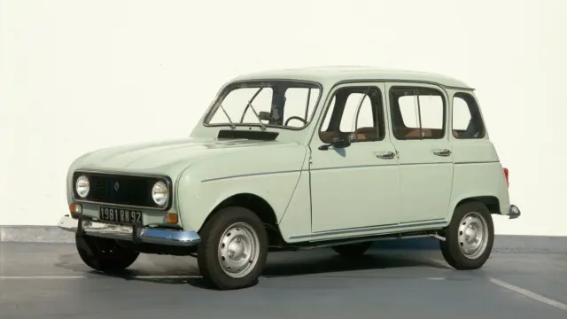

En la newsletter hablamos de la historia y las características de los vehículos clásicos. Estos tres modelos son un ejemplo de los temas que encontrarás en nuestros boletines.
SEAT 600

Su producción comenzó en España en 1957. Fue un coche pequeño que acercó
el automóvil a muchas familias. Dejó de fabricarse en 1973.
Su tamaño y sus formas redondeadas lo hicieron muy reconocible. El motor estaba situado en la parte trasera.
Volkswagen Escarabajo

Sus primeros ejemplares de preserie datan de 1938. Destaca por su carrocería
redondeada y por llevar el motor detrás.
El nombre Escarabajo hace referencia a su aspecto. Tuvo una trayectoria muy larga y numerosas versiones.
Renault 4

Se presentó en 1961. También se conoce como 4L y, en España,
como cuatro latas.
Su carrocería de cinco puertas y su portón trasero facilitaban cargar equipaje.
Era una propuesta práctica para desplazarse y trabajar.